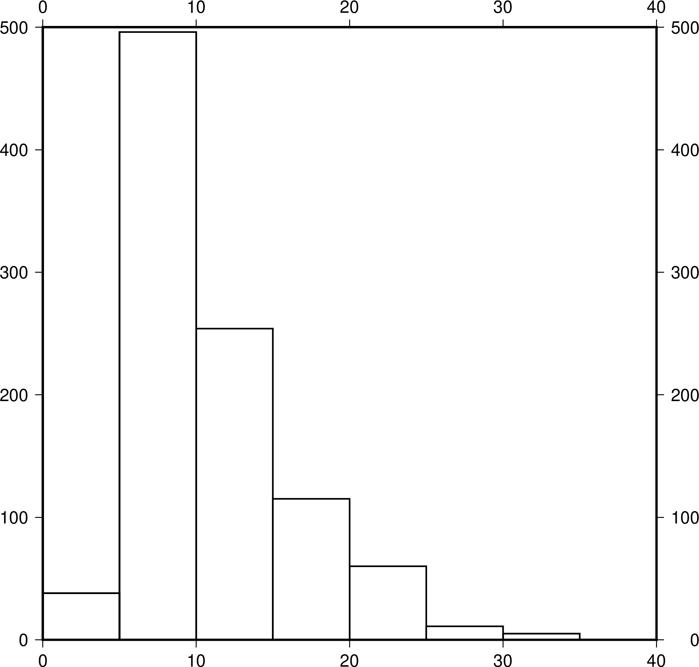
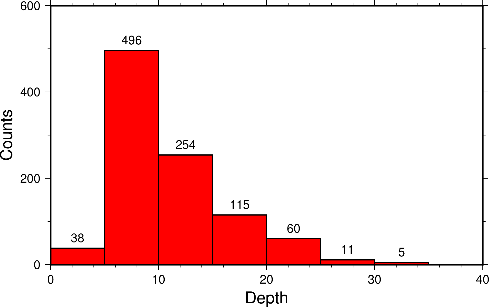

繪製直方圖¶
GMT 中 histogram 模塊用於統計並繪製直方圖。直方圖可以直觀地展現樣本的分佈情況。一個直方的寬度表示它的數據範圍，長度表示位於該範圍內的樣本的數量或者比例。
這一節中，我們通過繪製地震震源深度直方圖來介紹直方圖的繪製。以下示例使用的數據爲 eq.dat，數據包含了三列，分別是地震的經度、緯度和深度。
直方圖根據直方的方向可以分爲垂直直方圖和水平直方圖，也可以根據直方的長度的意義不同分爲計數直方圖和百分比直方圖。
垂直直方圖¶
GMT中默認繪製垂直直方圖。繪製直方圖只需要一列數據，而上面的示例數據有三列。我們需要使用 -i2 選項將輸入數據的第三列（GMT中列號從0開始）傳遞給 histogram。
直接使用下面的命令:
gmt histogram eq.dat -i2 -png map
會得到如下報錯信息:
histogram [ERROR]: Required argument for bin width not set
histogram [ERROR]: Option -T: Must specify bin width
histogram [ERROR]: Must specify either fill (-G) or lookup colors (-C), outline pen attributes (-W), or both.
報錯信息告訴我們，histogram 需要使用 -T 選項指定直方的寬度。同時還需要使用 -G 指定直方的填充色，或使用 -W 指定直方邊框的畫筆屬性。根據錯誤信息，我們向上面的命令增加了幾個額外的選項：
- -T5 設置了統計時每一個直方的寬度是5。該選項還可以更靈活地設置直方的最大最小值等屬性，詳見 histogram 模塊文件
- -W1p 設置直方的邊框寬度爲1p
- -Baf 則爲整張圖加了一個自動的邊框
gmt histogram eq.dat -Baf -T5 -W1p -i2 -png hist1

{kind=link}
垂直直方圖
由此，我們得到了一張非常簡單的直方圖。從直方圖中我們對數據也有了基本的認識。直方圖中橫軸表示數據中地震深度範圍集中在0-40千米。
增加修飾¶
爲了讓圖形更加的美觀，我們可以添加一些選項：
gmt histogram eq.dat -JX15c/9c -R0/40/0/600 -Bxaf+l"Depth" -Byaf+l"Counts" -BWSen -D -W1p -Gred -T5 -i2 -png hist2

{kind=link}
添加選項的垂直直方圖
- -JX15c/9c 指定了整張直方圖的寬度和高度。若不指定，GMT會自動指定一個合適的值
- -R0/40/0/600 設置了直方圖的數據範圍。若不指定，histogram 會自動確定最適合的數據範圍。這裏我們根據前圖的統計結果指定了新的 -R 範圍
- -B 選項用於指定底圖邊框和座標軸屬性
- -Gred 表示爲直方填充紅色
- -D 會在每個直方的上方標註該直方中的數量。該選項還可以接更多的子選項以控制標註的位置、字體和角度等
{kind=link}
{kind=link}